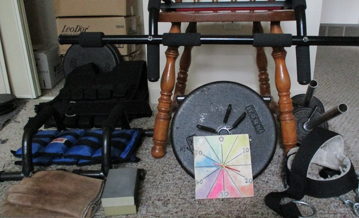

Home Gym Ideas
- I use typical items like dumbbells, ankle weights, weight vest, chinup bar, pushup handles, mat.
- I use less common items like a 'DARD' for the shins, one sided dumbbells for wrist movements, an old school neck harness.
- Chairs are very useful, they hold weights, can be used for dips, support the back during one arm exercises. Gloves and even those soft spongy sanding blocks from the hardware store can pad hands and feet during dips and wrist and shin exercises for example.
- A flight of stairs provides a nice cardio workout, (especially with some of the workout done wearing a weight vest). I start up two timers on the computer, one with the total time and one with a split time, to help me pace myself.
- A piece of wood across 2 hex dumbbells provides a platform for calf raises. I use planks of wood, possibly stacked 2 or 3 high, as a stop to limit the lower range of motion for some exercises like deadlifts and dumbbell squats.
- I fashioned an inexpensive clock for timing sets and rest intervals. It only has a second hand, and has seconds for digits on the face. Another option is the computer based workout timer that I wrote.